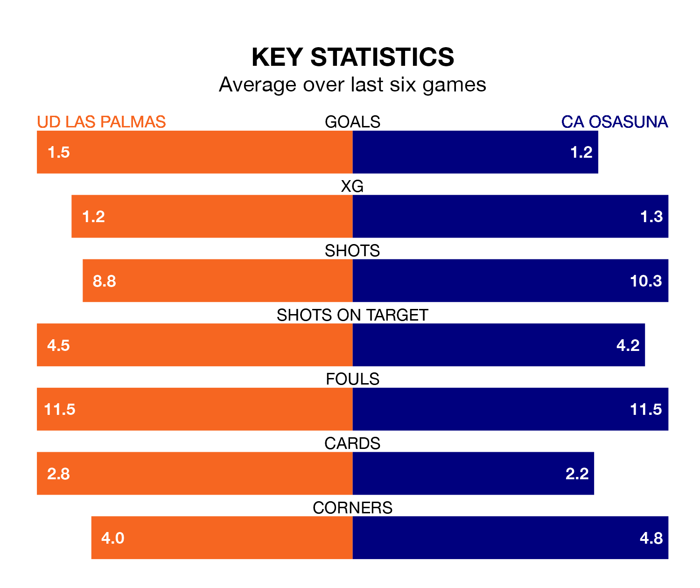

UD Las Palmas host CA Osasuna on Sunday at Estadio de Gran Canaria in La Liga.
In their last league match, on February 17, Las Palmas lost to Atlético Madrid 5-0 away.
Osasuna won, 2-0 at home against Cádiz, with Ante Budimir (two) scoring their goals.
In the last 10 years, Las Palmas and Osasuna have played each other on seven occasions. Las Palmas won three of them, Osasuna two, and they drew twice.
On average, Las Palmas scored 2.1 goals and Osasuna 1.6 in those matches.
Their last meeting was on November 11, when they played out a 1-1 draw.
In Budimir, Osasuna have one of the league's most on-form strikers so far this season. He has notched 13 goals in 25 appearances, to sit fourth in the scoring charts.
His goal rate of one every 145 minutes is much quicker than that of Kirian Rodríguez, Las Palmas's top scorer with a goal every 409 minutes, and a total of five goals in 24 games.
With 25 goals in 25 games so far this season, the home side are scoring at below the league average rate with 1.0 goals per game. But they are conceding fewer than average too, letting in 25 goals at a rate of 1.0 per game.
The visitors are also below average scorers, with 1.2 goals per game, compared to a league average of 1.3. They have conceded 1.4 goals per game.
Las Palmas are ninth in the table after 25 games, of which they have won 10 and drawn five, earning 35 points.
Osasuna are two places behind Las Palmas in 11th, with nine wins and five draws putting them on 32 points.
The hosts are in mixed form in La Liga, with three wins and a draw from their last six games.
And also with three wins and a draw over that period, Osasuna's form is identical – they have both taken 10 points from 18.
Updated: 12:18 (UTC), 19/02/24